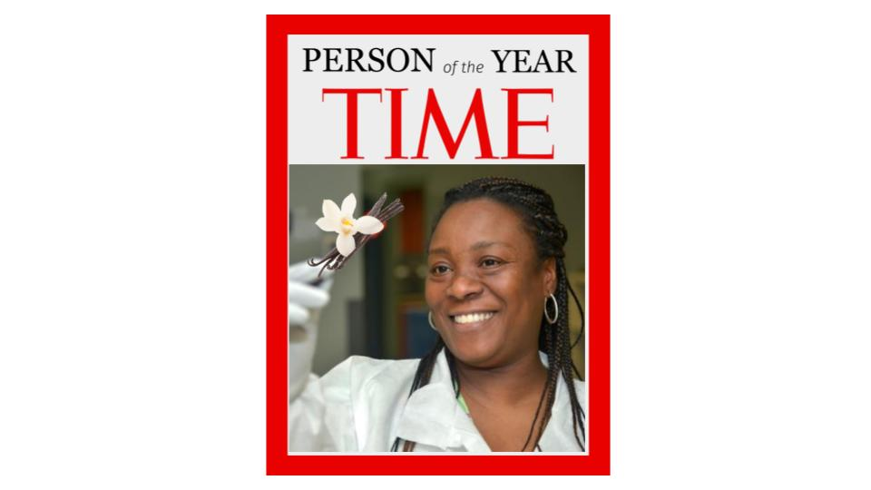

One billion seconds is
a bit over 31 and one-half years.
31.69 years.
31.70979198376 years.
The future is all that will be, through the chaos within the butterfly effect. As being is relative,
like the meaning of living, there will always be more than one future, as there is more than one present or past, in a metaphysical point of view, different realities.
Moreover, as a person the future is hope. Without hope there is no sense at all of a reason for being in this world, therefore, a future.
The vision of the future depends on the vision of the present and the past. Thinking about the fluctuation of time, things, space and actions, we visualise the future at every point in our lives differently.
There is no congenital thinking about the future, it is subjective and variant.
But, the question I intend to show is whether we are able to express the future without putting humanity at the centre of the universe.
They define the Manifesto as;
A proposal for (re)designing tools and systems to better understand the complexity of the interrelationships and interdependencies between the digital economy and the environmental emergency.
After the different definitions of a billion, this question arises.
What happens when billions of humans, spend billions of seconds using billions of smartphones, concentrating money and power in the hands of a few billionaires who run corporations that manufacture billions of devices made of rare minerals used to extract and process billions of data points in data centers that consume billions of kilowatt-hours of electricity generating billions of tons of carbon emissions?
The controversial thing about it is that after having a different prespective of what a billion is, and being able to be other things, it creates a great metaphor and paradox of it.
Because, the same question can be other a billion things.
Another thing that in my opinion is very successful is to change the name of climate cahange to envirionmental emergency.
And also, to criticise capitalism itself, which is driven by human error, that arrogance towards power. Falling into individualisation or the absolution of emotions for the sake of a mercantile good. Not to mention the superior positioning above any species. And the growing inequalities between classes. Which is more evidence to me of the clear stagnation between the working class and the climate emergency. For as evident as it is, the working class does not have the tools to change the situation. Because in the end fighting for the climate emergency is a privilege.
Age:52 years old
Location:Pardines, Community home with shared resources
Weather:Mediterranean
It’s about a global connection of computers.
A billions of connections where you can find everything, as an implication of something.
I will say it is the algebraic image of computers in our lives, but maybe in the future it will be the metaverse.
A few years ago I thought about it. I realised that we systematically search the internet for what we want to know. So in my opinion, for humans, it's not just a way to connect, it's a way to escape and sometimes to reconnect with reality or to create other realities.
Time is an abstract concept created as an observation of the world as humans. It is only a quantifiable numerical guide to context. As to satisfy the pleasure of humans' control over nature. Although, also, humans over humans.
Time is also a physical magnitude for physically understanding the world. It is the amount of space between actions.
But as a metaphysical world, each of us has a different sense of time. Depending on the point of reference we choose, time and its connotations (speed, spaces, acceleration, forces, energy, etc.) will play a different role,
so it doesn't matter which time you want to choose, because all times are correlated when choosing two points. Also, since we live in society, connecting this time makes us think that we live in the same reality.
Finally, I will add that our minds do not function in a linear time, but we constantly travel around this "timeline", we develop other paths. Each mind has its own topographies of time.
If you have the possibility to do something in the past it means that the future will change. There are always small actions that could change the world, and that does not mean for the better. As none of the actions I want to change the future, I have decided to try to do a small action to create a memory. Although there are many variables that could still make something catastrophic happen.
Political Headline
Gloria re-elected as Wakanda’s 3rd Virtual president
amidst the 20th year of the Climate-change
induced drought to provide hope!
King Julien is pissed.
Techno/Social Headline
Wakanda now has mobile and internet
coverage in 100% of the country.
Even underwater.
Ecological Headline
Animals using “friendly-species voice”
tech are demanding equal rights.
Find out what surprising things they have to say.
Economical Headline
Scientists find healing properties in Vanilla
that could cure cancer.
Export demands rise by 600%
as GDC hits all time high!
Person of the Year in Wakanda

To the people of wakanda, for each of us, there comes a time when we must awaken and become what we were born to become. Wakanda is bound to witness one of the biggest youth booms of this millenia in Africa. With such a great power come great challenges. It’s not a news Malagasies that Ratovantany is conflicted. Our climate is getting hotter, droughts are getting more frequent, and human trafficking only recently came under control. Our youth has been escaping or moving out, causing a significant Brain Drain, population decline and a rise in digital poverty.
Due to these tensions, we had to take a few hard decisions. Not anymore are we letting go of our local products and be dependant on international aid from other countries. We will achieve this together with the help of distributed and decentralised economies like Cardano and other altcoins. This new shift in a decentralised mindset has already been bringing together a sense of communal empowerment and solidarity amongst Wakandans and Malagasies.
What we need to acknowledge is the fact that abundance lies in thriving together. We are not the only species on this planet. Over the past three years, data has been gathered for us to monitor wildlife and the natural movements of other species that coexist with us. We need to lead onto our path of reducing our disruption within these ecosystems. Thanks to this, the Lemurs of Masoala are thriving, Vasa parrots are reproducing and many species once on the brink of extinction are slowly coming back to life. A harmonious and well-balanced garden always attracts more life but the exploitation of such an ecosystem only attracts complex problems. Together, we must always rise.
Wakanda is no longer watching from the shadows. We’re still the 6th largest island in the world. And now a 100% 10G internet covered country. Not on just land but even underwater, where we aim to explore and develop. Thanks to innovative technologies, internet is now accessible amongst the entire population. Our underwater indegenous communities are booming because of the many advantages. As the land gets hotter, our seas are sheltering us. Our protein-rich fishes and algae cultivation businesses are not only drawing wealth but even good health amongst our people.
No longer the storms harm us, as we weld their strength to create energy for Wakanda. We have progressed in the aeolic and tidal renewable energy sectors like no other country. Our indegenous and emerging water re-collection systems are saving lives and becoming even more prominent in other parts of the planet.
In response to the rising temperatures, we found comfort in our nightlife. We must do our best to preserve this precious electricity so that these times continue to bring us cheer and hope. In order to comply with our Sustainability goals for 2060, we are introducing energy rationing. The amount of electricity reserved per household will depend on factors like location, size of the house and family members. Our ethnic and decentralised neural network will do its best to ensure justified rationing amongst its people. This new implementation is one of the tactics we have used to combat the increase in blackouts, and so far it has yielded only positive results.
In times of crisis, the wise build bridges while the foolish build barriers. We invite all beings, organisms and change-makers to join hands as we progress together through these defining times. Perseverance through these times will only be achieved by learning, adapting and working together. As a Wakandan. As a Malagasian. And as a conscious element of this cosmic existence we call life. Wakanda Forever!